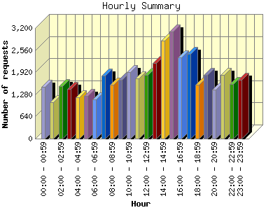
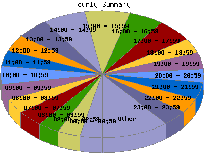

Report generated by Analog 6.0 and Report Magic 2.21
|
Web Server Statistics for "Harish Narayanan (hnarayan) - January 2008" Report generated by Analog 6.0 and Report Magic 2.21 |
The Hourly Summary identifies the level of activity broken down by each hour. Remember that one page hit can result in several server requests as the images for each page are loaded. This summary also compares the level of activity during working hours and after hours as a total for the report time frame.


| Hour | Number of requests | Number of bytes transferred | Percentage of the bytes | Percentage of the requests | |
|---|---|---|---|---|---|
| 1. | 00:00 - 00:59 | 1,500 | 77.049 MB | 3.88% | 3.52% |
| 2. | 01:00 - 01:59 | 1,049 | 63.688 MB | 3.21% | 2.46% |
| 3. | 02:00 - 02:59 | 1,527 | 53.662 MB | 2.71% | 3.59% |
| 4. | 03:00 - 03:59 | 1,432 | 56.161 MB | 2.83% | 3.36% |
| 5. | 04:00 - 04:59 | 1,203 | 51.031 MB | 2.57% | 2.83% |
| 6. | 05:00 - 05:59 | 1,231 | 63.904 MB | 3.22% | 2.89% |
| 7. | 06:00 - 06:59 | 1,128 | 65.219 MB | 3.29% | 2.65% |
| 8. | 07:00 - 07:59 | 1,823 | 87.748 MB | 4.42% | 4.28% |
| 9. | 08:00 - 08:59 | 1,563 | 122.103 MB | 6.16% | 3.67% |
| 10. | 09:00 - 09:59 | 1,707 | 82.174 MB | 4.14% | 4.01% |
| 11. | 10:00 - 10:59 | 1,924 | 92.426 MB | 4.66% | 4.52% |
| 12. | 11:00 - 11:59 | 1,751 | 64.105 MB | 3.23% | 4.11% |
| 13. | 12:00 - 12:59 | 1,835 | 63.535 MB | 3.20% | 4.31% |
| 14. | 13:00 - 13:59 | 2,196 | 176.871 MB | 8.92% | 5.16% |
| 15. | 14:00 - 14:59 | 2,842 | 87.151 MB | 4.39% | 6.67% |
| 16. | 15:00 - 15:59 | 3,101 | 119.019 MB | 6.00% | 7.28% |
| 17. | 16:00 - 16:59 | 2,343 | 59.651 MB | 3.01% | 5.50% |
| 18. | 17:00 - 17:59 | 2,453 | 97.674 MB | 4.92% | 5.76% |
| 19. | 18:00 - 18:59 | 1,567 | 81.448 MB | 4.11% | 3.68% |
| 20. | 19:00 - 19:59 | 1,840 | 86.325 MB | 4.35% | 4.32% |
| 21. | 20:00 - 20:59 | 1,426 | 49.040 MB | 2.47% | 3.35% |
| 22. | 21:00 - 21:59 | 1,853 | 100.957 MB | 5.09% | 4.35% |
| 23. | 22:00 - 22:59 | 1,581 | 110.527 MB | 5.57% | 3.71% |
| 24. | 23:00 - 23:59 | 1,706 | 72.089 MB | 3.63% | 4.01% |
| Work Hours (8:00am-4:59pm) | 19,262 | 867.037 MB | 43.71% | 45.24% | |
| After Hours (5:00pm-7:59am) | 23,319 | 1.090 GB | 56.29% | 54.76% | |
This report was generated on March 24, 2008 11:59.
Report time frame January 1, 2008 00:07 to January 31, 2008 23:58.
| Web statistics report produced by: | |
 Analog 6.0 Analog 6.0 |  Report Magic 2.21 Report Magic 2.21 |